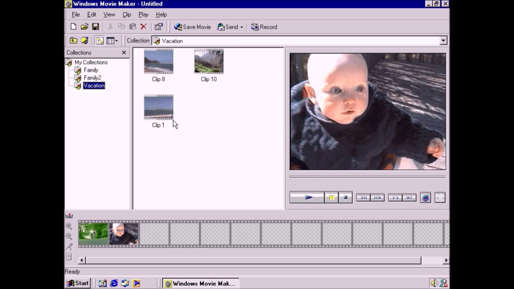
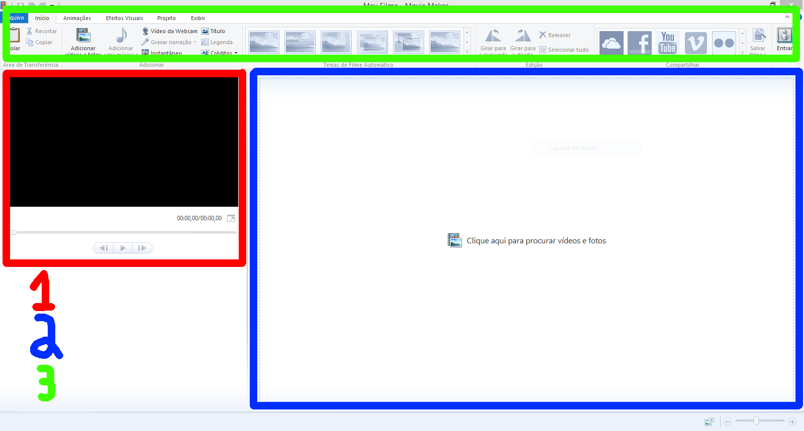
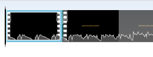
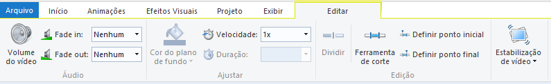

I. Do que estamos falando?
Windows Movie Maker é um programa de edição de vídeo lançado pela Microsoft em 2000, incluído como parte do Windows ME.

Desde então, o Movie Maker foi incluído no Windows XP e Vista, e, a partir de 2009, foi desenvolvido separadamente como parte do Windows Essentials (2006 - 2017).
Ele é um ótimo programa para enteder edição de vídeo, mesmo que ele tenha sido descontinuado em 2017, por isso, para um iniciante, o Movie Maker é perfeito.
Então vamos começar.
(Continua após a publicidade)
II. Baixando e instalando.
1. Baixe o instalador no archive.org
2. Proceda no instalador como queira, mas o importante é que você instale o Windows Movie Maker.
III. Funções Básicas
Vamos entender a interface:

1: A prévia, você pode ver como está indo seu vídeo aqui.
2: A linha do tempo é onde você adiciona, organiza ou seleciona conteúdo. Tudo que está na linha do tempo vai aparecer no vídeo exportado na ordem em que estiver organizado.
3: O menu de edições, onde você edita o vídeo todo ou qualquer coisa que estiver na linha do tempo, você também pode adicionar coisas por ele.
Para adicionar um vídeo ou imagem, clique na linha do tempo vazia ou no botão "Adicionar vídeos e fotos" na seção "Início" do menu.
O Movie Maker divide a sua linha do tempo em "setores", clicando num setor do vídeo, você vai para ele. Você também pode arrastar a barra preta para ir à uma parte específica da linha do tempo.

Clicando com o botão direito em um vídeo ou indo no menu "Editar", você pode "Dividir", onde tudo para a direita e para a esquerda de onde a barra preta está virarão "vídeos" separados, e você poderá alterar eles separadamente.

No menu "Editar", você também pode alterar o volume e velocidade do vídeo selecionado, além de adicionar um "Fade in" ou "Fade out".
IV. Conclusão
Existem muitas outras funções e coisas que você pode fazer, explore cada menu e opção do programa, e ao terminar, exporte seu vídeo na opção "Salvar filme" no menu "Início".